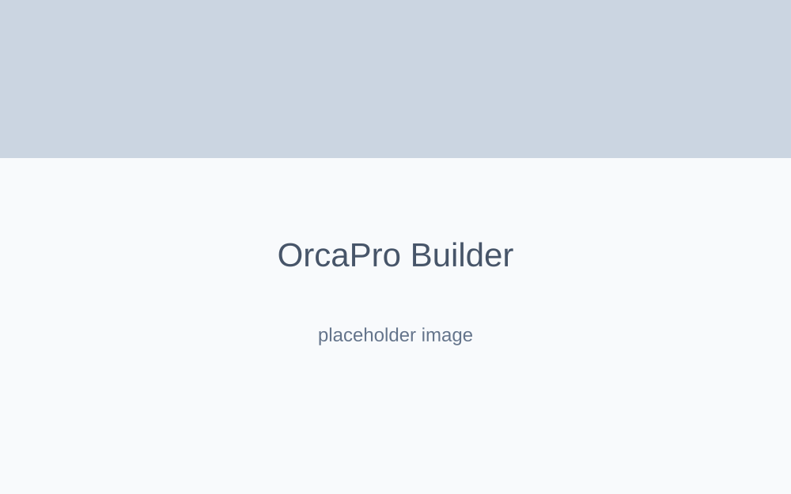

OrçaPro
Micro-SaaS para padronização e automação na geração de PDFs corporativos e propostas comerciais complexas.
Contexto & Problema
Gerar orçamentos comerciais customizados manualmente envolve trabalho repetitivo em ferramentas não integradas (Word, planilhas), ocasionando falta de padronização, erros de cálculo e perda severa de produtividade.
Objetivo
Desenvolver uma plataforma de produtividade onde prestadores de serviço definem valores dinâmicos e, via sistema, geram propostas comerciais matemáticas convertidas instantaneamente em PDF para o cliente final.
Arquitetura & Tecnologias
- Frontend: React e TypeScript para modelagem estrita dos objetos comerciais.
- BaaS: Supabase para o gerenciamento de catálogos de serviços e configurações de perfil.
- PDF Engine: Utilização pesada da biblioteca React PDF para compor nativamente documentos visuais que seriam complexos em renderizadores HTML puros.
Decisões Técnicas & Desafios
O desafio estrutural residia em componentizar a página de documento PDF usando primitivas (`View`, `Text`) do `@react-pdf/renderer` sem poluir os estados visuais da própria UI do Dashboard. A arquitetura garantiu uma ponte onde o estado global do formulário alimenta perfeitamente o Blob do PDF antes do download.
Galeria & Mockups

Conclusão
O OrçaPro exemplifica o uso pragmático de bibliotecas de nicho, combinando estado complexo a uma engine de renderização em tela e geração de documentos num fluxo sem fricção para o usuário.